Dasen PackagingYour Trusted Packaging Business Partner
From pre-production review and sampling confirmation to multi-format packaging production and final quality checks, we ensure stable, reliable delivery for your custom packaging projects.
Our factory combines automated equipment, integrated processing capability, and production follow-up for packaging projects that need stronger structure control, print consistency, and more stable repeat supply.
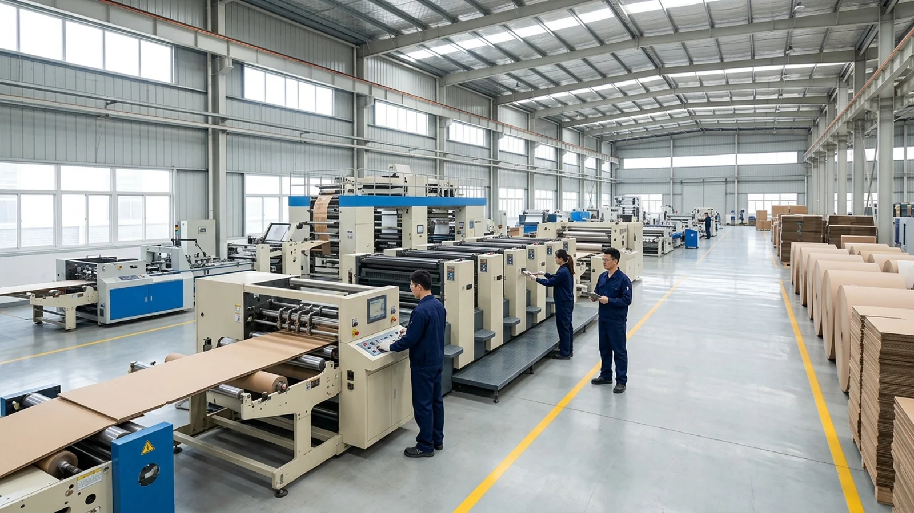
Our integrated production capability covers printing, finishing, board processing, carton forming, specialty box making, and label printing across diverse packaging formats.
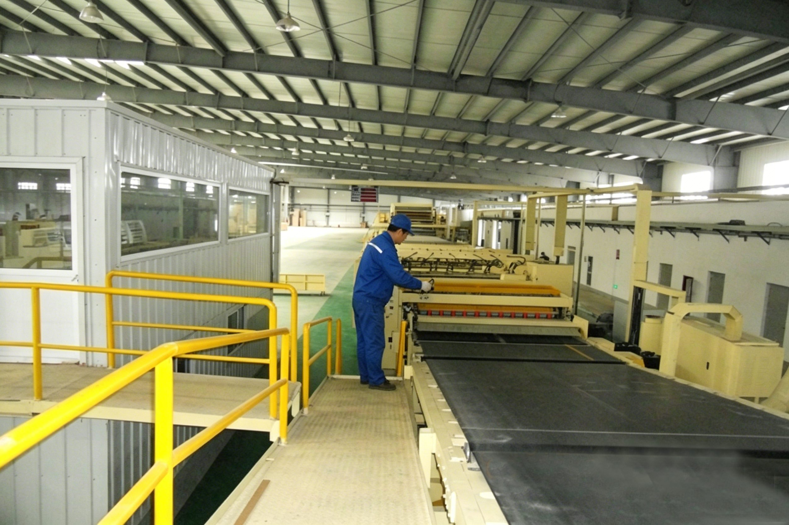
Our board-line processing capability provides a stable foundation for carton structures, outer packaging and large-volume projects. It ensures smooth material flow, consistent board preparation, and reliable repeat production.
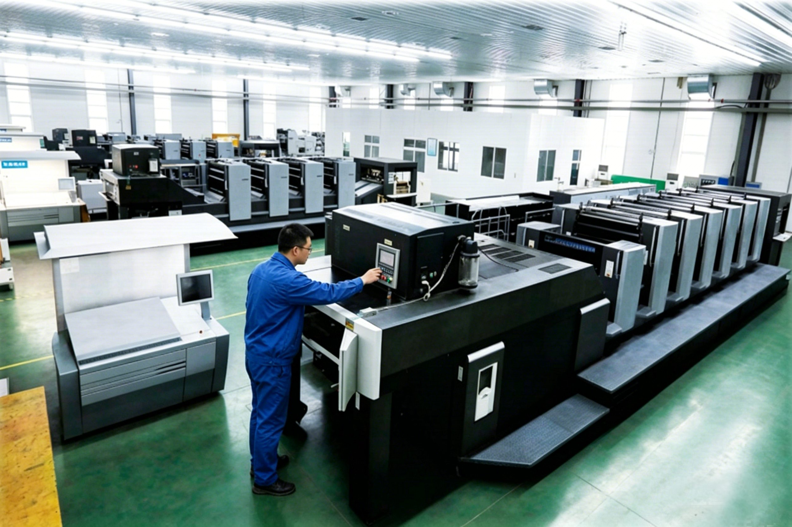
Our imported multi-color and large-format printing equipment supports cartons, labels, manuals, and other graphic-led packaging work. It ensures clearer artwork output, consistent color reproduction, and stable repeat production across packaging formats.
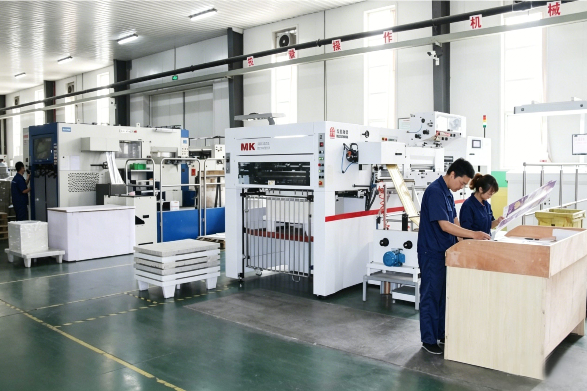
Our finishing equipment supports hot stamping, UV polishing, lamination, embossing and other processes for cartons and presentation packaging. These treatments enhance brand appearance, surface texture and final product presentation.
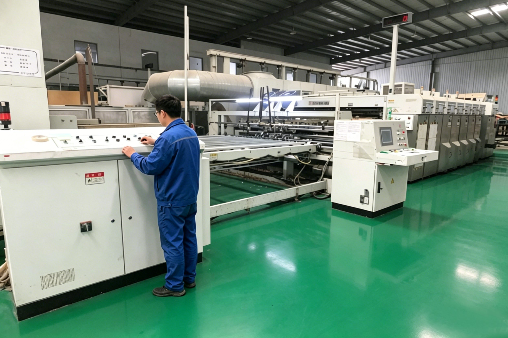
Our die-cutting equipment converts printed materials into clean, precise packaging shapes and structures. This ensures dimensional accuracy for cartons, inserts and specialty packs, directly supporting assembly and presentation quality.
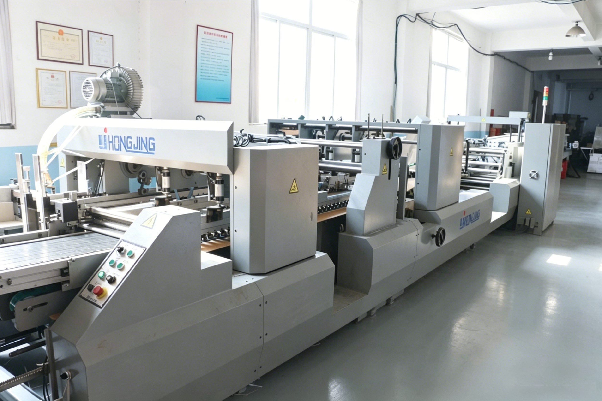
Automatic gluing and forming equipment ensures stable carton assembly during production. It delivers consistent forming quality and high efficiency, ideal for food boxes, retail cartons and repeat-order projects.
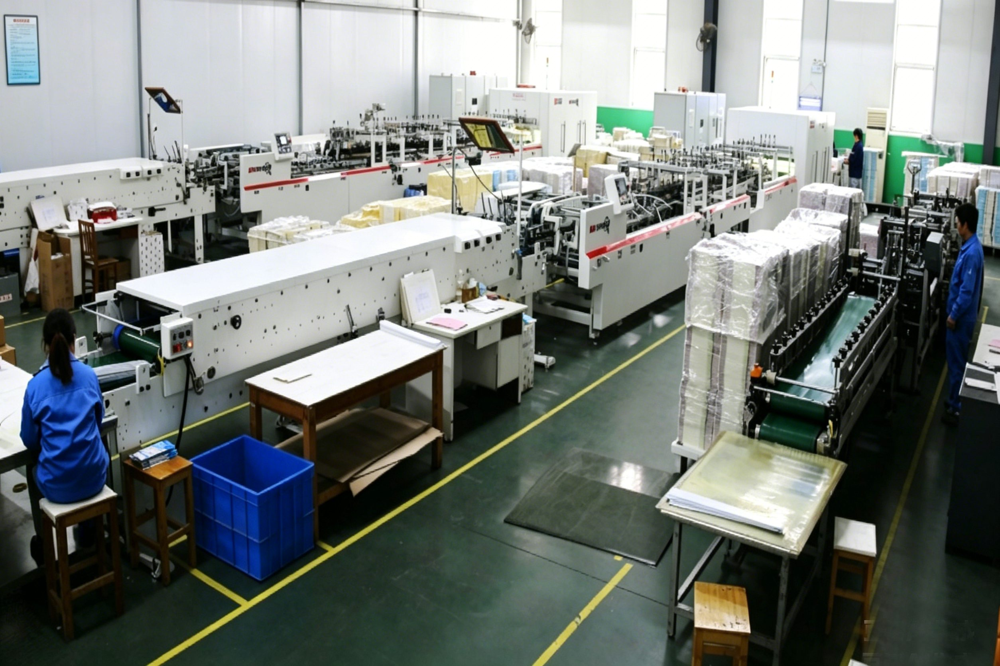
Our box-forming equipment supports multiple styles, offering flexibility for custom cartons, presentation formats and mixed projects. It adapts to changes in product design, packaging methods and retail requirements.
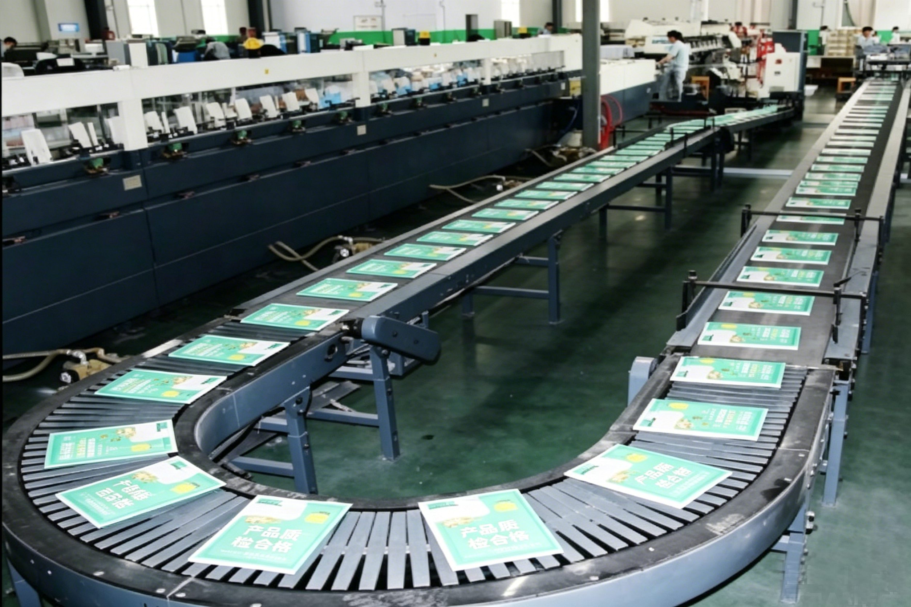
Our dedicated printing capability supports manuals, folded inserts and booklets. It helps keep supporting content aligned with the main packaging program, ideal for projects that require integrated production planning.
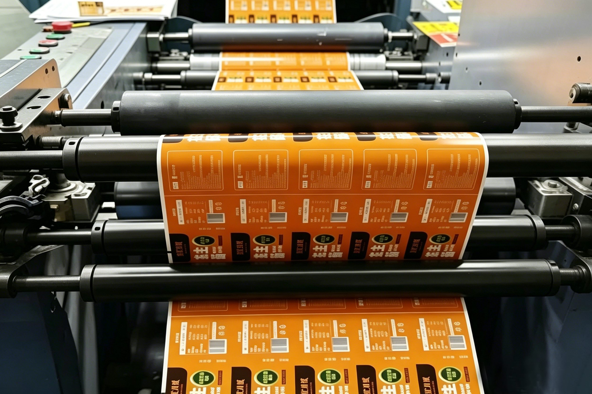
Our dedicated label-printing capability supports product labels, packaging stickers and brand materials. It ensures consistent quality with cartons, bags and other printed elements in the same project.
Our quality process helps keep materials, production steps, and final outgoing standards aligned before delivery.
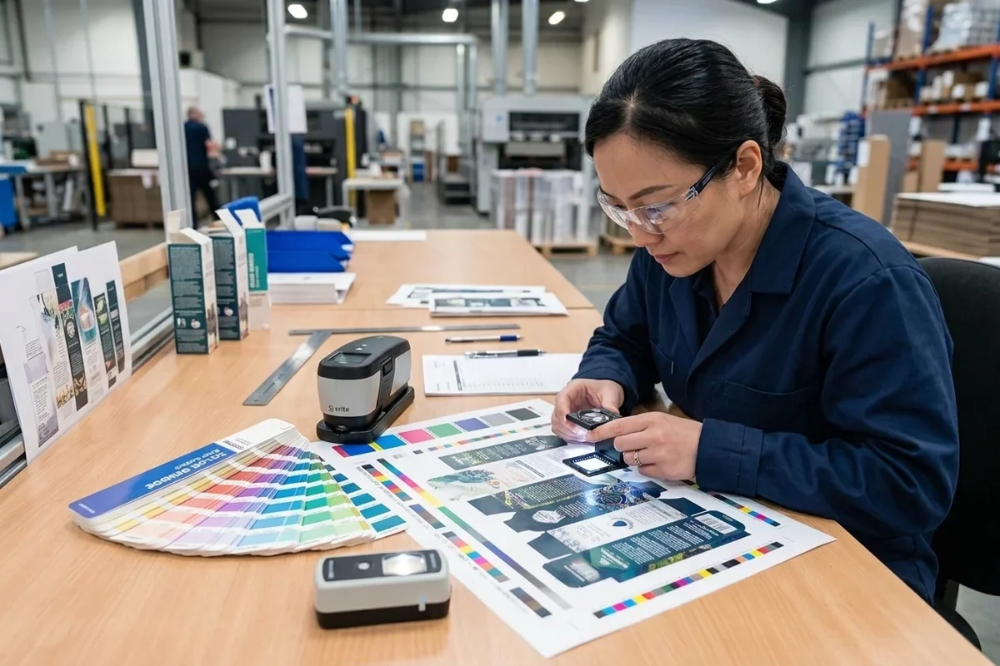
If your packaging solution is not yet finalized, we help evaluate structures, materials, print directions, and sampling priorities before production.
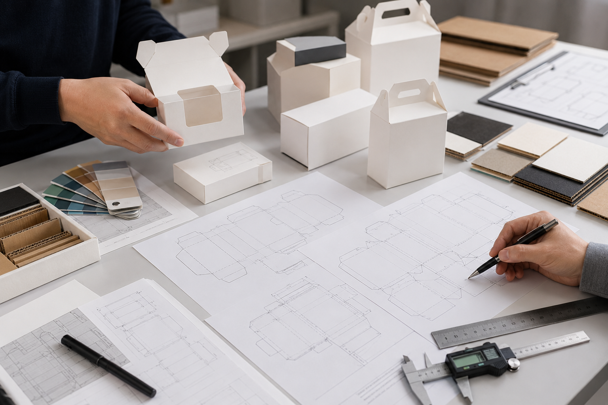
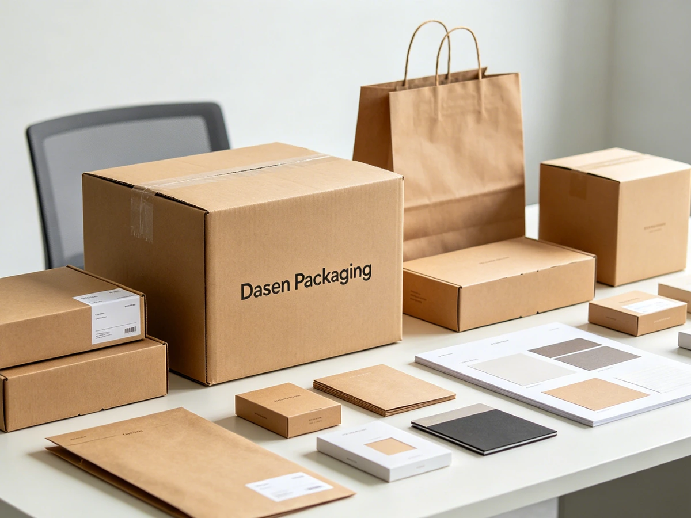
Projects typically start with defining your product, packaging type, size, quantity, and any existing reference packaging.
Our integrated packaging support lets you manage main packaging, printed materials, and repeat-order follow-up within a single program more clearly.
We handle boxes, bags, displays, labels, inserts, and manuals all within one integrated packaging program.
Structure, materials, printing, finishing, and sampling are fully reviewed before specifications are finalized.
Outer packaging, retail presentation, printed materials, and accessories are aligned clearly and consistently.
Confirmed specifications ensure stable follow-up production and consistent supply.
Share the product, packaging type, size, quantity, and any current packaging reference. We can review structure, materials, sampling, and production direction before the next step.